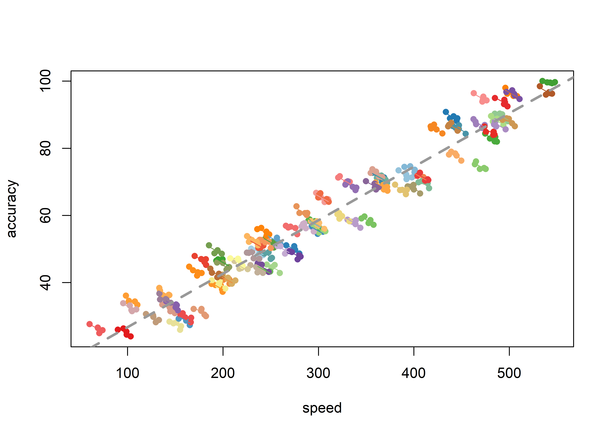

Mit der Korrelation für Messwiederholungen (repeated measures correlation; Bakdash & Marusich, 2017) können wir die die Korrelation von zwei Variablen berechnen, die zu mehreren Messzeitpunkten erhoben wurden. Bei der “normalen” Korrelation haben wir die Stärke eines Zusammenhangs zwischen zwei Variablen berechnet, die einmal erhoben wurden. Es gibt aber Fälle, in denen diese beiden Variablen über mehrere Messzeitpunkte erfasst wurden. Man könnte jetzt natürlich mehrmals eine Korrelation berechnen, aber das ist irgendwie merkwürdig, denn wir Fragen uns ja, was ist denn jetzt insgesamt der Zusammenhang zwischen diesen beiden Variablen? Ein Beispiel: Jeder Psychologe kennt den speed-accuracy tradeoff, also das Zusammenspiel zwischen der Geschwindigkeit einer Aufgabe und der Akkuratheit, mit der man diese Aufgabe durchführt, denn je schneller man ist, desto mehr Fehler macht man üblicherweise (Wickelgren, 1977). Um diese Aussage zu überprüfen, könnten wir untersuchen, wie Geschwindigkeit eines Probanden mit seiner Akkuratheit in einer bestimmten Aufgabe zusammenhängen.
Alle Berechnungen und Abbildungen können wir mit unseren Standardpaketen durchführen. Wir benötigen das tidyverse zum Data Wrangling und zur Visualisierung der Daten. haven benötigen wir für den Import von SPSS-Dateien und rstatix für statistische Analysen. Wenn man sich den Import und das Bereinigen der Daten sparen möchte (Schritte, die man dennoch üben sollte), findet man die Daten auch im Paket costatcompanion.
Für dieses Verfahren benötigen wir zusätzlich das Paket rmcorr, das ganz normal heruntergeladen und installiert werden kann.
Ein klassisches Beispiel ist die “Tipp-Leistung” auf einer Tastatur. Wir könnten uns zufällig ein paar Probanden, üblicherweise Psychologie-Studenten, ins Labor einladen und ihnen über einen Bildschirm eine Liste von zufälligen Wörtern präsentieren, die sie über eine Computer-Tastatur eingeben sollen. Das lassenw ir usnere Probanden jeweils fünf Mal machen. Dabei messen wir die Geschwindigkeit, mit der sich das machen (in Tastenanschlägen pro Minute) und die Akkuratheit (in Prozent). Eine Akkuratheit von 100 bedeutet dabei, dass keine Fehler gemacht wurden, dass also eben alles akkurat und richtig eingegeben wurde.
Die Daten dazu finden wir entweder in der SPSS-Datei typing.sav oder im Paket costatcompanion unter demselben Namen. Der Datensatz enthält zunächst die Variable id, in der die Probanden-ID eingetragen wurde, dann die Variable trial, die angibt, um den wievielten Verusch es sich für diesen Probanden handelt. speed ist die Geschwindigkeit eines Probanden pro Durchlauf in Tastenanschlägen pro Minute. Schließlich finden wir die “Leistung” des Probanden in der Spalte accuracy.
## # A tibble: 435 x 4
## id trial speed accuracy
## <chr> <int> <dbl> <dbl>
## 1 1 1 242. 48.4
## 2 1 2 242. 48.1
## 3 1 3 236. 50.2
## 4 1 4 230. 50.1
## 5 1 5 237. 48.4
## 6 2 1 251. 47.3
## 7 2 2 248. 49.0
## 8 2 3 250. 47.0
## 9 2 4 243. 48.6
## 10 2 5 239. 49.2
## # ... with 425 more rowsAuch mit der Korrelation für Messwiederholungen bewegen wir uns im allgemeinen linearen Modell, also gelten die üblichen Voraussetzungen. Eine Ausnahme ist die Unabhängigkeit der Messungen, die wir ja gerade explizit berücksichtigen wollen. Zudem sollten die Residuen normalverteilt sein und ein linearer Zusammenhang zwischen den beiden Variablen bestehen.
Wie immer sollten wir unsere Daten auf Ausreißer und extreme Werte kontrollieren und uns deskriptive Statistiken ausgeben lassen. Dabei gibt es schon einmal keinen Probanden, der alles falsch gemacht hat, aber durchaus welche, die fehlerfrei gearbeitet haben. Zudem haben wir Probanden dabei, die anscheinend mit dem Adler-System tippen (den FInger so lange über der Tastatur kreisen lassen, bis der zu drückende Buchstabe identifiziert ist und angegriffen werden kann) und richtig flinke FInger mit fast 600 Tastenanschlägen pro Minute. Wir werden außerdem feststellen, dass wir Daten von 87 Probanden zu jeweils fünf Messungen vorliegen haben. Zudem ist es bei Korrelationen (und Regressionen) immer eine gute Idee, die Daten als Streudiagramm abzubilden.
## # A tibble: 2 x 13
## variable n min max median q1 q3 iqr mad mean sd se
## <chr> <dbl> <dbl> <dbl> <dbl> <dbl> <dbl> <dbl> <dbl> <dbl> <dbl> <dbl>
## 1 accuracy 435 23.9 100 56.2 44.5 72.0 27.6 20.7 59.1 20.0 0.957
## 2 speed 435 60.3 548. 288. 206. 404. 198. 137. 304. 122. 5.83
## # ... with 1 more variable: ci <dbl>## # A tibble: 87 x 2
## id n
## <chr> <int>
## 1 1 5
## 2 10 5
## 3 11 5
## 4 12 5
## 5 13 5
## 6 14 5
## 7 15 5
## 8 16 5
## 9 17 5
## 10 18 5
## # ... with 77 more rowsHier stellen wir etwas verblüffendes fest: Eigentlich erwarten wir den speed-accuracy tradeoff, als eine Verringerung der accuracy bei höherem speed, aber wir scheinen genau das Gegenteil zu finden. Nach unseren Daten scheint eine höhere Geschwindigkeit der Probanden mit einer höheren Akkuratheit einherzugehen. Was stimmt denn nun? Im Prinzip tatsächlich beides.
Bei Messwiederholunegn gehen wir davon aus, dass die Daten eines einzelnen Probanden innerhalb dieses Probanden ähnlicher sind als die Daten zwischen Probanden. Uns interessiert außerdem der Zusammenhang zwischen Geschwindigkeit und Akkuratheit innerhalb eines Probanden, aber gemittelt für alle getesteten Probanden. Nun gibt es aber jene Probanden, die den Computer meiden wie der Teufel das Weihwasser. Auf der anderen Seite gibt es die Probanden, die vielleicht mehrere Stunden täglich am Computer arbeiten und die Tastatur benutzen müssen. Wir haben in unserer Stichprobe also die Anfänger und die Experten. Was uns jetzt nicht interessiert, ist der Zusammenhang über alle Probanden hinweg (also das, was wir in unserem Streudiagramm gezeichnet haben), sondern der intrapersonelle Zusammenhang, unabhängig von interpersonellen Eigenschaften. Genau da kommt die Korrelation mit Messwiederholungen ins Spiel. Vereinfacht gesagt nehmen wir uns den Zusammenhang jeweils pro Proband und “mitteln” diesen über alle Probanden.
Natürlich könnte man die Korrelation von speed und accuracy über alle Probanden und Messungen hinweg berechnen, also zwischen den Probanden und nicht innerhalb der Probanden. Das wollen wir zwar nicht, aber wir können es ja mal versuchen. Es ergibt sich eine sehr starke positive Korrelation zwischen speed und accuracy.
## # A tibble: 1 x 8
## var1 var2 cor statistic p conf.low conf.high method
## <chr> <chr> <dbl> <dbl> <dbl> <dbl> <dbl> <chr>
## 1 speed accuracy 0.97 83.6 2.89e-269 0.964 0.975 PearsonEin (verständlicher) Ansatz wäre es, die Korrelation zwischen speed und accuracy für jeden Messzeitpunkt zu errechnen. Dabei kommen wir allerdings auf 5 Korrelationskoeffizienten und betrachten den Zusammenhang wieder zwischen den Probanden und nicht innerhalb der Probanden. Auch hier ergeben sich wieder starke positive Korrelationen zwischen speed und accuracy.
typing %>%
nest_by(trial) %>%
mutate(
correlations = list(cor_test(data, vars = c(speed, accuracy)))
) %>%
unnest(correlations)## # A tibble: 5 x 10
## # Groups: trial [5]
## trial data var1 var2 cor statistic p conf.low conf.high method
## <int> <list<tb> <chr> <chr> <dbl> <dbl> <dbl> <dbl> <dbl> <chr>
## 1 1 [87 x 3] speed accu~ 0.97 38.1 3.20e-55 0.957 0.982 Pears~
## 2 2 [87 x 3] speed accu~ 0.97 36.6 8.57e-54 0.954 0.980 Pears~
## 3 3 [87 x 3] speed accu~ 0.97 35.8 4.58e-53 0.952 0.979 Pears~
## 4 4 [87 x 3] speed accu~ 0.97 36.4 1.30e-53 0.953 0.980 Pears~
## 5 5 [87 x 3] speed accu~ 0.97 40.2 4.78e-57 0.961 0.983 Pears~Genauso verheerend ist es, erst die Mittelwerte pro Proband zu ermitteln und dann eine einfache Korrelation, weil wir genau den Zusammenhang innerhalb der Probanden, den wir ermitteln wollen, durch die Bildung des Mittelwerts eliminieren. Übrig belibt der nicht gewollte Zusammenhang zwischen den Probanden.
# Mittelwert von speed und accuracy pro Proband
participant_means <- typing %>%
group_by(id) %>%
summarise(across(c(speed, accuracy), mean))## `summarise()` ungrouping output (override with `.groups` argument)## # A tibble: 1 x 8
## var1 var2 cor statistic p conf.low conf.high method
## <chr> <chr> <dbl> <dbl> <dbl> <dbl> <dbl> <chr>
## 1 speed accuracy 0.97 39.1 4.04e-56 0.959 0.983 PearsonWarum gehe ich so ausführlich auf das ein, was falsch ist? Weil es immer noch oft gemacht wird, und ich ein Bewusstsein dafür schaffen möchte, dass es anders gehen muss.
Das richtige Verfahren ist, wie gesagt, die Korrelation für Messwiederholungen. Diese ist mit der Funktion rmcorr() sehr einfach durchzuführen. Das Ergebnis speichern wir in einem Objekt, dessen Namen wir frei bestimmen. Um nun endlich die Korrelation zu erhalten, rufen wir das Objekt einfach auf. Unter Umständen erhält man eine Warnung darüber, dass die Variable, die die Probanden angibt (in diesem Falle id) in einen Faktor überführt wurde. Das können wir einfach so hinnehmen und muss uns nicht weiter stören.
rm_typing <- rmcorr(participant = "id", measure1 = speed, measure2 = accuracy, dataset = typing)
rm_typing##
## Repeated measures correlation
##
## r
## -0.7969593
##
## degrees of freedom
## 347
##
## p-value
## 5.719434e-78
##
## 95% confidence interval
## -0.8323987 -0.7550281Und tatsächlich erhalten wir hier eine signifikante, negative Korrelation zwischen speed und accuracy, \(r_{rm}(347) = -.80, 95\% \text{CI} [-.83, -.76], p < .001\). Was hat rmcorr() nun unter der Haube gemacht? Es hat den Zusammenhang zwischen unseren beiden Variablen innerhalb der Probanden betrachtet. Das ist fast so, also würde man für jeden Probanden eine eigene Regressionsgerade einzeichnen, allerdings mit einigen Einschränkungen (bspw. haben alle Geraden pro Proband bei dieser Methode dieselbe Steigung).
Das kann man sich auch mit dem nativen R-Befehl plot() ansehen. Hier sieht man, wie jeder Proband eine eigene Farbe bekommen hat und pro Proband eine “Regressionsgerade” geschätzt wurde. Zusätzlich kann man sich mit dem Argument overall = TRUE anzeigen lassen, wie die Korrelation aussehen würde, wenn wir die Messwiederholung nicht beachten würden.

Wie man sich diese nützliche Abbildung mit dem umfangreichen ggplot2 erstellen kann, betrachten wir bei Multilevel Linear Models.
We found a negative, significant repeated measures correlation between speed and accuracy, indicating less accuracy with greater speed in a typing task, \(r_{rm}(347) = -.80, 95\% \text{CI} [-.83, -.76], p < .001\).
Claus et al. (2020) haben sich den Placebo-Effekt von Antidepressiva vorgenommen. Ein Großteil, wenn nicht sogar die gesamte der Wirkung, von Antidepressiva ist nämlich auf den Placebo-Effekt zurückzuführen (Kirsch, 2010; Moncrieff et al., 2004; Whitaker, 2015). Sollte dem tatsächlich so sein, dann könnte man die Wirkung von Antidepressiva deutlich erhöhen, indem man den Placebo-Effekt an sich verstärkt. Genau das versuchten die Autoren, indem sie eine kognitiv-verhaltenstherapeutische Intervention entwickelten, die genau diesen Effekt für Patienten mit uniplorarer depressiver STörung direkt verstärken sollte. Diese Intervention testeten sie im Rahmen einer randomisierten Kontrollstudie auf ihre Wirksamkeit. Einer der treibenden Kräfte des Placebo-Effekts scheint die Erwartung eines Patienten zu sein, auf jeden Fall eine Verbesserung zu erleben (???). Diese Erwartung, so wie andere klinische Maße, erhoben sie in vier aufeinanderfolgenden Wochen an ihren Patienten.
Die Daten lassen sich in der Datei placebo_amplification.sav oder Paket costatcompanion unter demselben Namen. Die Erwartung eines Patienten, durch die Therapie sicher eine Verbesserung zu erwarten, ist in der Variable exp_certain zu finden und kann Werte zwischen 0 und 100 annehmen (Überzeugungsrating in Prozent). Die Autoren interessierte vor allen Dingen die selbst eingeschätzte Depressivität der Patienten, die sie mit Becks Depressions-Inventar (BDI) erhoben haben, dessen Daten in der Variable bdi zu finden sind.
## # A tibble: 172 x 13
## id age sex treatment measurement exp_size exp_certain exp_speed cgi_s
## <chr> <dbl> <fct> <fct> <chr> <dbl> <dbl> <dbl> <dbl>
## 1 1 54 Male TAU 1 74.0 12.5 92.7 6
## 2 1 54 Male TAU 2 79.8 13.8 88.3 4
## 3 1 54 Male TAU 3 85.1 14.9 86.2 4
## 4 1 54 Male TAU 4 29.8 16.0 70.2 4
## 5 2 52 Fema~ EG 1 75.9 61.0 45.3 5
## 6 2 52 Fema~ EG 2 71.3 56.4 41.5 5
## 7 2 52 Fema~ EG 3 67.0 54.3 64.9 3
## 8 2 52 Fema~ EG 4 64.9 59.6 80.8 3
## 9 3 54 Male EG 1 92.6 71.6 100 6
## 10 3 54 Male EG 2 79.8 94.7 100 5
## # ... with 162 more rows, and 4 more variables: bdi <dbl>, shaps <dbl>,
## # who <dbl>, hamd <dbl>## # A tibble: 2 x 13
## variable n min max median q1 q3 iqr mad mean sd se
## <chr> <dbl> <dbl> <dbl> <dbl> <dbl> <dbl> <dbl> <dbl> <dbl> <dbl> <dbl>
## 1 bdi 163 2 55 29 22.5 38 15.5 11.9 29.6 11.5 0.904
## 2 exp_cer~ 163 0 100 47.6 18.3 72.8 54.5 41.1 46.8 30.8 2.41
## # ... with 1 more variable: ci <dbl>Die Durchführung ist wie immer kurz und schmerzlos.
##
## Repeated measures correlation
##
## r
## -0.4938562
##
## degrees of freedom
## 119
##
## p-value
## 8.60642e-09
##
## 95% confidence interval
## -0.6188418 -0.3444824We found the expected size of an improvement to be significantly and negatively correlated with the patients’ BDI-scores across all measurements, \(r_{rm}(119) = -.49, 95\% \text{CI} [-.62, -34], p < .001\).
Bakdash, J. Z., & Marusich, L. R. (2017). Repeated Measures Correlation. Frontiers in psychology, 8, 456. https://doi.org/10.3389/fpsyg.2017.00456
Claus, B. B., Scherbaum, N., & Bonnet, U. (2020). Effectiveness of an Adjunctive Psychotherapeutic Intervention Developed for Enhancing the Placebo Effect of Antidepressants Used within an Inpatient-Treatment Program of Major Depression: A Pragmatic Parallel-Group, Randomized Controlled Trial. Psychotherapy and psychosomatics, 1–3. https://doi.org/10.1159/000505855
Kirsch, I. (2010). The Emperor’s New Drugs: Exploding the Antidepressant Myth.
Moncrieff, J., Wessely, S., & Hardy, R. (2004). Active placebos versus antidepressants for depression. The Cochrane database of systematic reviews, 1, CD003012. https://doi.org/10.1002/14651858.CD003012.pub2
Whitaker, R. (2015). Anatomy of an Epidemic: Magic Bullets, Psychiatric Drugs, and the Astonishing Rise of Mental Illness in America. Broadway Books.
Wickelgren, W. A. (1977). Speed-accuracy tradeoff and information processing dynamics. Acta Psychologica, 41(1), 67–85. https://doi.org/10.1016/0001-6918(77)90012-9